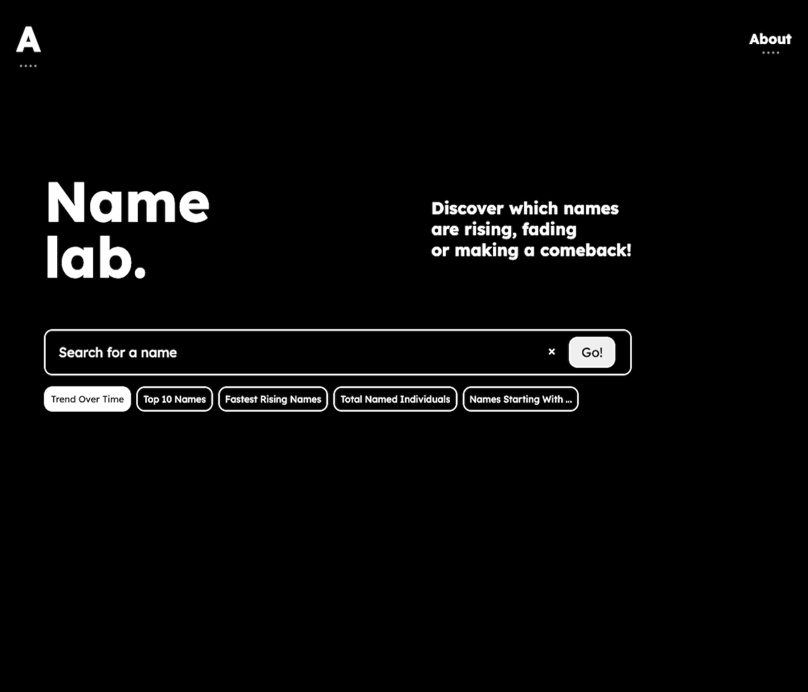

Hi there, I'm a developer who enjoys bulding things that
are simple, useful and made to last.
I care about clear code, good design, and real results.
Simple ideas, solid structure, thoughtful execution — always.
I come from a background in UX systems work,
with experience from large organizations like Sopra Steria and Norsk Hydro.
Today, I build clean and maintainable web applications using mainly Python
— always with structure, care, and an eye for user experience.
Having worked closely with complex systems, business processes, and real users,
I know how to bridge the gap between what users need and how systems behave.
I'm comfortable working across teams, spotting inefficiencies,
and turning ideas into real, working tools.
I'm fullstack-curious && Python-focused && always exploring
better ways to build.
Studied informatics. I enjoy shipping clean code,
good design, as well as wiring up the frontend when needed.
Built (this.site) from scratch,
plus (that.other.one)
&& (another.one)
my.learning += { deeper_data_analysis, big_data_tools, real_world_insight }

Norwegian Names | Analytics
A simple web application that lets users explore name trends in Norway using real data. Built with Flask and styled with custom CSS, the app features interactive visualizations powered by Plotly, a modern search interface, and multiple tools to analyze popular, rising, and rare names over time.
- Python
- Flask
- Pandas
- Plotly
- JavaScript
- HTML/CSS
- Render
- GitHub

ISS-tracker
This project notifies you by email when the International Space Station is overhead and it is nighttime in your location.
- Python
- SMTPLib
- API (Open Notify, Sunrise-Sunset, Requests)
- GitHub
Billboard Hot 100 Scraper
Hot 100 Time Machine is a Flask-based web application that allows users to select a historical date and retrieve the Billboard Hot 100 chart for that day. Users can view the top songs and export the list if they wish.
- Python
- BeautifulSoup
- HTML/CSS
- JavaScript
- Pikaday
- GitHub
Movie Watchlist
This is a Flask-based web application for managing a movie watchlist. Users can register, log in, add movies, view details, and track their viewing progress. The app uses MongoDB for storing user data and movie information.
- Python
- HTML/CSS
- MongoDB
- GitHub
I hold a bachelor's degree in Informatics: Design, Use, and Interaction from the University of Oslo, where I explored the intersection of user experience, technology, and system design. While my professional experience has primarily focused on analysis and system support, I've consistently maintained a deep interest in development and data.
During my studies, I gained hands-on experience with programming languages such as Python and Java, as well as working with SQL and data structures. Combined with my natural curiosity and strong analytical mindset, this foundation has helped me transition into software development through independent projects and continuous learning.
I've had the opportunity to work with IT systems and operations in two of Norway's largest organizations — Sopra Steria and Norsk Hydro.
Sopra SteriaAt Sopra Steria, I transitioned from a hands-on IT support role into a more strategic position as a Knowledge Coach, where I helped shape internal processes and supported teams across ITIL frameworks and ServiceNow.
Norsk HydroAt Hydro, I've worked as a Systems Analyst, supporting employees across the organization in getting the most out of tools like ServiceNow, SAP and Office. Much of my work involved collaborating across teams, proposing improvements, and using data to identify bottlenecks and improve performance. These roles sharpened my understanding of both people and systems — and sparked my interest in building better tools myself.
Hi again — I enjoy life in the city, but I often find balance outdoors when I can.
I'am social, curious, and always looking to learn something new — whether that's in code or in conversation.
I spend time outside, explore hobbies like skiing and running.
You can say I appreciate good structure in both design and daily life.
I built this site to share what I make, reflect a little on what I care about, and maybe connect with people who value thoughtful, useful work.